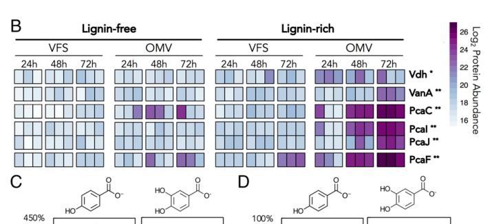

pcaC (PP_1381, Q88N35) encodes 4-carboxymuconolactone decarboxylase (EC 4.1.1.44), an enzyme of the protocatechuate (PCA) branch of the beta-ketoadipate pathway. It decarboxylates 4-carboxymuconolactone (gamma-carboxymuconolactone), the product of the upstream PcaB reaction, to 3-oxoadipate enol-lactone (beta-ketoadipate enol-lactone), which is subsequently hydrolyzed by PcaD. PcaC is thus a core step in the central aromatic catabolic funnel that converts lignin- and plant-derived aromatics (via protocatechuate) toward beta-ketoadipate and TCA-cycle entry in Pseudomonas putida KT2440.
| GO Term | Evidence | Action | Reason |
|---|---|---|---|
|
GO:0047575
4-carboxymuconolactone decarboxylase activity
|
IEA
GO_REF:0000120 |
ACCEPT |
Summary: 4-carboxymuconolactone decarboxylase activity is the specific enzyme function of PcaC. It catalyzes decarboxylation of 4-carboxymuconolactone (gamma-carboxymuconolactone) to 3-oxoadipate enol-lactone, the step in the protocatechuate branch of the beta-ketoadipate pathway that lies between PcaB and PcaD.
Reason: UniProt and the NCBIfam PcaC family model (TIGR02425) identify PcaC as 4-carboxymuconolactone decarboxylase (EC 4.1.1.44), and the pca genes belong to the protocatechuate branch of the beta-ketoadipate pathway. The falcon deep-research synthesis independently confirms this specific reaction and the canonical pathway ordering pcaGH -> pcaB -> pcaC -> pcaD across multiple sources.
Supporting Evidence:
file:PSEPK/pcaC/pcaC-uniprot.txt
RecName: Full=4-carboxymuconolactone decarboxylase
file:PSEPK/pcaC/pcaC-deep-research-falcon.md
catalyzes the decarboxylation of **4-carboxymuconolactone (γ-carboxymuconolactone)** to **3-oxoadipate enol-lactone (β-ketoadipate enol-lactone)**
PMID:12534466
protocatechuate (pca genes) and catechol (cat genes) branches of the beta-ketoadipate pathway
|
|
GO:0019618
protocatechuate catabolic process, ortho-cleavage
|
IC
PMID:12534466 Genomic analysis of the aromatic catabolic pathways from Pse... |
NEW |
Summary: PcaC acts in the protocatechuate (pca) branch of the beta-ketoadipate pathway, downstream of protocatechuate ring cleavage. As 4-carboxymuconolactone decarboxylase it catalyzes the PcaC step (after PcaB, before PcaD) of the ortho-cleavage protocatechuate catabolic route, so this BP annotation is well-supported as the biological process the enzyme participates in.
Reason: This BP term is not in the current GOA (which carries only the IEA molecular-function term), so it is proposed as a NEW annotation. The gene product is the expected downstream decarboxylase in the protocatechuate/pca branch. KT2440 pathway mapping places the pca genes in the beta-ketoadipate route, and the falcon synthesis repeatedly and consistently situates PcaC in the bacterial PCA-to-beta-ketoadipate conversion (pcaGH -> pcaB -> pcaC -> pcaD), funneling aromatics toward central metabolism. The IC inference (from the upstream protocatechuate-3,4-dioxygenase annotation and the conserved pca operon) is sound and the falcon evidence strengthens it.
Supporting Evidence:
file:PSEPK/pcaC/pcaC-uniprot.txt
RecName: Full=4-carboxymuconolactone decarboxylase
file:PSEPK/pcaC/pcaC-deep-research-falcon.md
PcaC is the decarboxylase acting **after PcaB** and **before PcaD**
PMID:12534466
protocatechuate (pca genes) and catechol (cat genes) branches of the beta-ketoadipate pathway
|
Q: Does KT2440 PcaC show substrate preferences that distinguish protocatechuate-derived intermediates from related muconolactones?
Suggested experts: Beta-ketoadipate pathway enzymologists
Q: Is the OMV/outer-membrane-vesicle association of PcaC reported under lignin-rich conditions a genuine secondary localization, or a co-purification artifact of high-abundance pathway enzymes?
Suggested experts: Pseudomonas putida aromatic-catabolism researchers
Experiment: Assay purified PcaC with 4-carboxymuconolactone and related lactone substrates, coupled to downstream beta-ketoadipate pathway readouts, to obtain KT2440-specific kinetic constants (Km, kcat) absent from the current literature.
Type: substrate specificity assay
Experiment: Construct a pcaC deletion mutant and test growth on protocatechuate and lignin-derived aromatics to confirm essentiality of the PcaC step, which has not been directly demonstrated by knockout phenotype in the retrieved literature.
Type: gene knockout phenotype assay
The research report should be a detailed narrative explaining the function, biological processes, and localization of the gene product. Citations should be given for all claims.
You should prioritize authoritative reviews and primary scientific literature when conducting research. You can supplement
this with annotations you find in gene/protein databases, but these can be outdated or inaccurate.
We are specifically interested in the primary function of the gene - for enzymes, what reaction is catalyzed, and what is the substrate specificity? For transporters, what is the substrate? For structural proteins or adapters, what is the broader structural role? For signaling molecules, what is the role in the pathway.
We are interested in where in or outside the cell the gene product carries out its function.
We are also interested in the signaling or biochemical pathways in which the gene functions. We are less interested in broad pleiotropic effects, except where these elucidate the precise role.
Include evidence where possible. We are interested in both experimental evidence as well as inference from structure, evolution, or bioinformatic analysis. Precise studies should be prioritized over high-throughput, where available.
The target protein is PcaC, annotated as 4-carboxymuconolactone decarboxylase (EC 4.1.1.44) in Pseudomonas putida KT2440, consistent with the UniProt entry (Q88N35) and the canonical protocatechuate (PCA) branch of the β-ketoadipate pathway described in KT2440-focused studies and pathway summaries. In this pathway context, PcaC is the decarboxylase acting after PcaB and before PcaD. (park2020responseofpseudomonas pages 8-11, chow2024confirmationofgenes pages 11-15)
PcaC (4-carboxymuconolactone decarboxylase; EC 4.1.1.44) catalyzes the decarboxylation of 4-carboxymuconolactone (γ-carboxymuconolactone) to 3-oxoadipate enol-lactone (β-ketoadipate enol-lactone). (park2020responseofpseudomonas pages 8-11, chow2024confirmationofgenesb pages 11-15, chow2024confirmationofgenes pages 11-15)
This reaction is a core step within the bacterial PCA 3,4-cleavage route:
- Protocatechuate is cleaved by PcaHG (protocatechuate 3,4-dioxygenase) to yield 3-carboxy-cis,cis-muconate.
- PcaB converts the muconate to γ-carboxymuconolactone.
- PcaC decarboxylates γ-carboxymuconolactone to 3-oxoadipate enol-lactone.
- PcaD hydrolyzes the enol-lactone to β-ketoadipate, which is further processed (e.g., via PcaIJ, PcaF) toward TCA-cycle entry. (chow2024confirmationofgenesb pages 11-15, chow2024confirmationofgenes pages 11-15)
Within the retrieved KT2440 literature, PcaC is consistently discussed as the enzyme responsible for the γ/4-carboxymuconolactone → enol-lactone step in the PCA branch, but P. putida KT2440-specific kinetic constants (Km, kcat) or broader substrate panels were not found in the retrieved corpus. Therefore, the most defensible statement from these sources is that the physiologic substrate is 4-carboxymuconolactone (γ-carboxymuconolactone) generated by the upstream PcaB reaction in PCA catabolism. (park2020responseofpseudomonas pages 8-11, chow2024confirmationofgenesb pages 11-15, chow2024confirmationofgenes pages 11-15)
A key recent mechanistic development for aromatic catabolism in KT2440 is evidence that outer membrane vesicles (OMVs) carry enzymes capable of turning over lignin-derived aromatics. Salvachúa et al. (PNAS, Apr 2020, URL: https://doi.org/10.1073/pnas.1921073117) present a heat map (their Fig. 4B) comparing protein abundance in OMV vs vesicle-free supernatant (VFS) fractions under lignin-rich vs lignin-free conditions. In this figure, PcaC appears as a distinct row in the β-ketoadipate pathway panel and is shown as enriched in OMV fractions, especially in lignin-rich medium across the time course. (salvachua2020outermembranevesicles media 4d5c9524)
This provides direct, figure-level evidence that (at least a fraction of) PcaC can be associated with extracellular OMVs under aromatic/lignin-relevant conditions in KT2440, supporting the broader conclusion that aromatic catabolic capacity can extend beyond the cytosol via vesicle-packaged enzymes. (salvachua2020outermembranevesicles pages 6-7, salvachua2020outermembranevesicles media 4d5c9524)
In contrast to OMV-associated detection, Park et al. (ChemSusChem, Apr 2020, URL: https://doi.org/10.1002/cssc.202000268) report shotgun proteomics of KT2440 grown on base-catalyzed depolymerized lignin liquor (BCD lignolysate). In these datasets, multiple PCA-branch enzymes were induced, but PcaC was not detected. (park2020responseofpseudomonas pages 8-11, park2020responseofpseudomonas pages 11-15)
Interpretation: these findings are compatible with the idea that PcaC may be (i) expressed at levels below detection in some whole-cell proteomic workflows/conditions, (ii) conditionally produced, and/or (iii) partitioned into extracellular/vesicle fractions in a way that complicates its detection in standard cellular proteomes. The available evidence does not allow a definitive statement that PcaC is primarily cytosolic vs vesicle-associated; it does, however, provide direct evidence of OMV association under at least one experimental context. (park2020responseofpseudomonas pages 11-15, salvachua2020outermembranevesicles media 4d5c9524)
PcaC functions in the central aromatic catabolic funnel (β-ketoadipate pathway, PCA branch), which is critical for conversion of diverse lignin-derived and plant-derived aromatics into intermediates that enter central carbon metabolism. In KT2440, aromatic substrates can be funneled to protocatechuate, then processed through PcaHG–PcaB–PcaC–PcaD to β-ketoadipate and onward toward acetyl-CoA/succinyl-CoA equivalents. (chow2024confirmationofgenesb pages 11-15, chow2024confirmationofgenes pages 11-15)
A 2024 pathway-focused synthesis reiterates the canonical bacterial ordering pcaGH → pcaB → pcaC → pcaD, explicitly stating that γ-carboxymuconolactone is decarboxylated by 4-carboxymuconolactone decarboxylase (pcaC) to form 3-oxoadipate enol-lactone, situating pcaC in the bacterial PCA-to-β-ketoadipate conversion. This same source frames PCA metabolism as part of a broader lignin-valorization landscape, noting that PCA is a precursor to industrially relevant molecules (e.g., via cis,cis-muconate routes). (chow2024confirmationofgenesb pages 11-15, chow2024confirmationofgenesa pages 11-15)
Although published in 2020, the OMV catabolism result is a major conceptual advance that continues to influence current thinking about how KT2440 accesses and processes aromatics extracellularly. The direct inclusion of PcaC in the OMV/VFS abundance heat map supports the possibility that central pathway enzymes can participate in extracellular aromatic turnover via vesicle packaging, at least under lignin-relevant cultivation regimes. (salvachua2020outermembranevesicles pages 6-7, salvachua2020outermembranevesicles media 4d5c9524)
A prominent real-world metabolic-engineering implementation uses the KT2440 PCA/β-ketoadipate pathway (including PcaC) as a central “funneling” module for polymer upcycling. Werner et al. (Metabolic Engineering, Sep 2021, URL: https://doi.org/10.1016/j.ymben.2021.07.005) engineered P. putida KT2440 to convert PET glycolysis products to β-ketoadipic acid (βKA) via terephthalate → protocatechuate → PcaHG → PcaB → PcaC → PcaD → …. (werner2021tandemchemicaldeconstruction pages 2-3, werner2021tandemchemicaldeconstruction pages 1-2)
Quantitative outcomes reported include:
- 15.1 ± 0.6 g/L βKA from commercial BHET in bioreactors, at 76% molar yield. (werner2021tandemchemicaldeconstruction pages 1-2)
- Downstream product recovery by acidification and organic extraction at ~98% yield and >99% purity. (werner2021tandemchemicaldeconstruction pages 2-3)
- In shake flasks, conversion of 3.11 ± 0.06 mM BHET/MHET to 1.39 ± 0.01 mM βKA (reported 45 ± 1% molar yield). (werner2021tandemchemicaldeconstruction pages 7-9)
These data illustrate that PcaC’s step is part of a practically deployed pathway module supporting high-titer production of a commodity-platform chemical (βKA) from plastic-derived feedstocks. (werner2021tandemchemicaldeconstruction pages 2-3, werner2021tandemchemicaldeconstruction pages 1-2)
Park et al. (ChemSusChem, Apr 2020, URL: https://doi.org/10.1002/cssc.202000268) provide quantitative proteomics showing strong induction of aromatic catabolism when KT2440 is grown on BCD lignolysate. Reported values include:
- PobA (4-hydroxybenzoate hydroxylase): 6.8 log2 fold-change (BCD vs glucose). (park2020responseofpseudomonas pages 8-11)
- PcaHG/PcaB/PcaD: induced with changes spanning roughly 1.4–6.0 log2 fold-change. (park2020responseofpseudomonas pages 11-15, park2020responseofpseudomonas pages 8-11)
- Downstream PcaIJ and PcaF: approximately 3.0 and 2.9 log2 fold-change, respectively. (park2020responseofpseudomonas pages 11-15, park2019theresponseof pages 8-11)
- PcaC: not detected in these datasets despite pathway induction of adjacent steps. (park2020responseofpseudomonas pages 11-15, park2020responseofpseudomonas pages 8-11)
These statistics support the centrality of the protocatechuate/β-ketoadipate pathway during lignin-derived aromatic utilization in KT2440, while also highlighting potential measurement/partitioning complexity for PcaC in whole-cell proteomics. (park2020responseofpseudomonas pages 11-15, salvachua2020outermembranevesicles media 4d5c9524)
Across KT2440-focused primary literature and pathway summaries, PcaC is consistently treated as a core, conserved enzymatic step in the PCA branch that links ring-fission chemistry to formation of β-ketoadipate-derived intermediates (i.e., the “central funnel” toward core metabolism). (park2020responseofpseudomonas pages 8-11, chow2024confirmationofgenesb pages 11-15, chow2024confirmationofgenes pages 11-15)
Two observations from authoritative KT2440 datasets are particularly informative for functional annotation:
1) Condition-dependent detectability: Whole-cell proteomics can strongly induce the PCA branch yet still not detect PcaC, suggesting low abundance, technical detectability limits, or non-canonical partitioning. (park2020responseofpseudomonas pages 11-15, park2020responseofpseudomonas pages 8-11)
2) Extracellular association via OMVs: OMV proteomics provides direct evidence that PcaC can be present/enriched in OMVs under lignin-relevant conditions, aligning with the broader model that OMVs can mediate extracellular aromatic processing. (salvachua2020outermembranevesicles media 4d5c9524)
| Gene / protein | Enzymatic reaction | Pathway context | Evidence type | Key quantitative data |
|---|---|---|---|---|
| pcaC; UniProt Q88N35; PP_1381 | 4-carboxymuconolactone (γ-carboxymuconolactone) → 3-oxoadipate enol-lactone / β-ketoadipate enol-lactone, catalyzed by 4-carboxymuconolactone decarboxylase (EC 4.1.1.44) (chow2024confirmationofgenes pages 11-15, chow2024confirmationofgenesb pages 11-15) | Central step in the protocatechuate (PCA) branch of the β-ketoadipate pathway, downstream of PcaB and upstream of PcaD, funneling aromatic/lignin-derived compounds toward TCA-cycle entry (park2020responseofpseudomonas pages 8-11, chow2024confirmationofgenesb pages 11-15, chow2024confirmationofgenes pages 11-15) | Review / pathway description: recent summaries and pathway-focused sources place pcaC in canonical bacterial PCA catabolism and lignin valorization contexts (chow2024confirmationofgenesb pages 11-15, chow2024confirmationofgenesa pages 11-15, chow2024confirmationofgenes pages 11-15) | No enzyme kinetics for P. putida KT2440 PcaC were retrieved from the available sources; function is consistently assigned by pathway annotation and comparative literature (chow2024confirmationofgenes pages 11-15) |
| pcaC; P. putida KT2440 | Same reaction as above (park2020responseofpseudomonas pages 8-11, chow2024confirmationofgenes pages 11-15) | Induced aromatic catabolism during growth on biomass-derived aromatic fractions / lignolysate (park2020responseofpseudomonas pages 11-15, park2020responseofpseudomonas pages 8-11, park2019theresponseof pages 8-11) | Proteomics induction context: related PCA-branch proteins increased strongly, while PcaC itself was not detected in the Park et al. datasets (park2020responseofpseudomonas pages 11-15, park2020responseofpseudomonas pages 8-11, park2019theresponseof pages 8-11) | 504 proteins identified overall; induction thresholds log2 FC > 1, p < 0.01. PobA up to 6.8 / 6.75 log2 FC; PcaHG/PcaB/PcaD ranged about 1.4–6.0 log2 FC (or 1.41–5.96); PcaIJ ~3.0 / 3.04 log2 FC; PcaF ~2.9 / 2.88 log2 FC; PcaC not detected (park2020responseofpseudomonas pages 11-15, park2020responseofpseudomonas pages 8-11, park2019theresponseof pages 8-11) |
| pcaC; P. putida KT2440 | Same reaction as above (salvachua2020outermembranevesicles pages 6-7) | β-ketoadipate-pathway enzyme associated with extracellular aromatic-catabolic machinery in outer membrane vesicles (OMVs) / vesicle-free supernatant comparisons (salvachua2020outermembranevesicles pages 6-7, salvachua2020outermembranevesicles media 4d5c9524) | OMV localization / association: figure-based evidence indicates a PcaC row in the OMV/VFS heatmap, with enrichment in OMVs, especially in lignin-rich medium; the main text more broadly supports OMV-encapsulated aromatic-catabolic enzymes in KT2440 (salvachua2020outermembranevesicles pages 6-7, salvachua2020outermembranevesicles media 4d5c9524) | Figure 4B reports log2 protein abundance patterns across OMV and VFS fractions over 72 h; direct numeric values for PcaC were not extracted, but qualitative OMV enrichment was reported from the image evidence (salvachua2020outermembranevesicles media 4d5c9524) |
| pcaC within engineered PCA-to-β-ketoadipate route | Included in engineered sequence PcaHG → PcaB → PcaC → PcaD → PcaIJ converting PCA to β-ketoadipic acid in PET-upcycling designs (werner2021tandemchemicaldeconstruction pages 2-3, werner2021tandemchemicaldeconstruction pages 1-2) | Used in metabolic engineering / real-world implementation to funnel PET-derived terephthalate via PCA to β-ketoadipic acid (βKA) in P. putida KT2440 (werner2021tandemchemicaldeconstruction pages 2-3, werner2021tandemchemicaldeconstruction pages 1-2, werner2021tandemchemicaldeconstruction pages 7-9) | Metabolic engineering: PET/BHET-to-βKA pathway engineering explicitly includes pcaC as a native central-pathway step (werner2021tandemchemicaldeconstruction pages 2-3) | Bioreactor production reached 15.1 ± 0.6 g/L βKA from commercial BHET; reported 76% molar yield in bioreactors; downstream recovery ~98% yield and >99% purity. In shake flasks, 3.11 ± 0.06 mM BHET/MHET gave 1.39 ± 0.01 mM βKA (45 ± 1% molar yield) (werner2021tandemchemicaldeconstruction pages 2-3, werner2021tandemchemicaldeconstruction pages 1-2, werner2021tandemchemicaldeconstruction pages 7-9) |
Table: This table summarizes the verified identity, reaction, pathway placement, and major evidence streams for Pseudomonas putida KT2440 pcaC (UniProt Q88N35/PP_1381). It also highlights the main quantitative results available from proteomics and metabolic-engineering studies.
References
(park2020responseofpseudomonas pages 8-11): Mee‐Rye Park, Yan Chen, Mitchell Thompson, Veronica T. Benites, Bonnie Fong, Christopher J. Petzold, Edward E. K. Baidoo, John M. Gladden, Paul D. Adams, Jay D. Keasling, Blake A. Simmons, and Steven W. Singer. Response of pseudomonas putida to complex, aromatic‐rich fractions from biomass. ChemSusChem, 13:4455-4467, Apr 2020. URL: https://doi.org/10.1002/cssc.202000268, doi:10.1002/cssc.202000268. This article has 30 citations and is from a domain leading peer-reviewed journal.
(chow2024confirmationofgenes pages 11-15): N Chow. Confirmation of genes involved in the degradation of protocatechuate in aspergillus niger through characterization of their encoded enzymes. Unknown journal, 2024.
(chow2024confirmationofgenesb pages 11-15): N Chow. Confirmation of genes involved in the degradation of protocatechuate in aspergillus niger through characterization of their encoded enzymes. Unknown journal, 2024.
(salvachua2020outermembranevesicles media 4d5c9524): Davinia Salvachúa, Allison Z. Werner, Isabel Pardo, Martyna Michalska, Brenna A. Black, Bryon S. Donohoe, Stefan J. Haugen, Rui Katahira, Sandra Notonier, Kelsey J. Ramirez, Antonella Amore, Samuel O. Purvine, Erika M. Zink, Paul E. Abraham, Richard J. Giannone, Suresh Poudel, Philip D. Laible, Robert L. Hettich, and Gregg T. Beckham. Outer membrane vesicles catabolize lignin-derived aromatic compounds in pseudomonas putida kt2440. Proceedings of the National Academy of Sciences, 117:9302-9310, Apr 2020. URL: https://doi.org/10.1073/pnas.1921073117, doi:10.1073/pnas.1921073117. This article has 158 citations and is from a highest quality peer-reviewed journal.
(salvachua2020outermembranevesicles pages 6-7): Davinia Salvachúa, Allison Z. Werner, Isabel Pardo, Martyna Michalska, Brenna A. Black, Bryon S. Donohoe, Stefan J. Haugen, Rui Katahira, Sandra Notonier, Kelsey J. Ramirez, Antonella Amore, Samuel O. Purvine, Erika M. Zink, Paul E. Abraham, Richard J. Giannone, Suresh Poudel, Philip D. Laible, Robert L. Hettich, and Gregg T. Beckham. Outer membrane vesicles catabolize lignin-derived aromatic compounds in pseudomonas putida kt2440. Proceedings of the National Academy of Sciences, 117:9302-9310, Apr 2020. URL: https://doi.org/10.1073/pnas.1921073117, doi:10.1073/pnas.1921073117. This article has 158 citations and is from a highest quality peer-reviewed journal.
(park2020responseofpseudomonas pages 11-15): Mee‐Rye Park, Yan Chen, Mitchell Thompson, Veronica T. Benites, Bonnie Fong, Christopher J. Petzold, Edward E. K. Baidoo, John M. Gladden, Paul D. Adams, Jay D. Keasling, Blake A. Simmons, and Steven W. Singer. Response of pseudomonas putida to complex, aromatic‐rich fractions from biomass. ChemSusChem, 13:4455-4467, Apr 2020. URL: https://doi.org/10.1002/cssc.202000268, doi:10.1002/cssc.202000268. This article has 30 citations and is from a domain leading peer-reviewed journal.
(chow2024confirmationofgenesa pages 11-15): N Chow. Confirmation of genes involved in the degradation of protocatechuate in aspergillus niger through characterization of their encoded enzymes. Unknown journal, 2024.
(werner2021tandemchemicaldeconstruction pages 2-3): Allison Z. Werner, Rita Clare, Thomas D. Mand, Isabel Pardo, Kelsey J. Ramirez, Stefan J. Haugen, Felicia Bratti, Gara N. Dexter, Joshua R. Elmore, Jay D. Huenemann, George L. Peabody, Christopher W. Johnson, Nicholas A. Rorrer, Davinia Salvachúa, Adam M. Guss, and Gregg T. Beckham. Tandem chemical deconstruction and biological upcycling of poly(ethylene terephthalate) to β-ketoadipic acid by pseudomonas putida kt2440. Sep 2021. URL: https://doi.org/10.1016/j.ymben.2021.07.005, doi:10.1016/j.ymben.2021.07.005. This article has 213 citations and is from a domain leading peer-reviewed journal.
(werner2021tandemchemicaldeconstruction pages 1-2): Allison Z. Werner, Rita Clare, Thomas D. Mand, Isabel Pardo, Kelsey J. Ramirez, Stefan J. Haugen, Felicia Bratti, Gara N. Dexter, Joshua R. Elmore, Jay D. Huenemann, George L. Peabody, Christopher W. Johnson, Nicholas A. Rorrer, Davinia Salvachúa, Adam M. Guss, and Gregg T. Beckham. Tandem chemical deconstruction and biological upcycling of poly(ethylene terephthalate) to β-ketoadipic acid by pseudomonas putida kt2440. Sep 2021. URL: https://doi.org/10.1016/j.ymben.2021.07.005, doi:10.1016/j.ymben.2021.07.005. This article has 213 citations and is from a domain leading peer-reviewed journal.
(werner2021tandemchemicaldeconstruction pages 7-9): Allison Z. Werner, Rita Clare, Thomas D. Mand, Isabel Pardo, Kelsey J. Ramirez, Stefan J. Haugen, Felicia Bratti, Gara N. Dexter, Joshua R. Elmore, Jay D. Huenemann, George L. Peabody, Christopher W. Johnson, Nicholas A. Rorrer, Davinia Salvachúa, Adam M. Guss, and Gregg T. Beckham. Tandem chemical deconstruction and biological upcycling of poly(ethylene terephthalate) to β-ketoadipic acid by pseudomonas putida kt2440. Sep 2021. URL: https://doi.org/10.1016/j.ymben.2021.07.005, doi:10.1016/j.ymben.2021.07.005. This article has 213 citations and is from a domain leading peer-reviewed journal.
(park2019theresponseof pages 8-11): Mee-Rye Park, Yan Chen, Mitchell Thompson, Veronica T. Benites, Bonnie Fong, Christopher J. Petzold, Edward E. K. Baidoo, John M. Gladden, Paul D. Adams, Jay D. Keasling, Blake A. Simmons, and Steven W. Singer. The response of pseudomonas putida to a complex lignolysate. bioRxiv, Sep 2019. URL: https://doi.org/10.1101/764399, doi:10.1101/764399. This article has 3 citations.

id: Q88N35
gene_symbol: pcaC
product_type: PROTEIN
status: DRAFT
taxon:
id: NCBITaxon:160488
label: Pseudomonas putida (strain ATCC 47054 / DSM 6125 / CFBP 8728 / NCIMB 11950 / KT2440)
description: pcaC (PP_1381, Q88N35) encodes 4-carboxymuconolactone decarboxylase (EC 4.1.1.44),
an enzyme of the protocatechuate (PCA) branch of the beta-ketoadipate pathway. It decarboxylates
4-carboxymuconolactone (gamma-carboxymuconolactone), the product of the upstream PcaB reaction,
to 3-oxoadipate enol-lactone (beta-ketoadipate enol-lactone), which is subsequently hydrolyzed
by PcaD. PcaC is thus a core step in the central aromatic catabolic funnel that converts
lignin- and plant-derived aromatics (via protocatechuate) toward beta-ketoadipate and TCA-cycle
entry in Pseudomonas putida KT2440.
existing_annotations:
- term:
id: GO:0047575
label: 4-carboxymuconolactone decarboxylase activity
evidence_type: IEA
original_reference_id: GO_REF:0000120
review:
summary: 4-carboxymuconolactone decarboxylase activity is the specific enzyme function of PcaC.
It catalyzes decarboxylation of 4-carboxymuconolactone (gamma-carboxymuconolactone) to
3-oxoadipate enol-lactone, the step in the protocatechuate branch of the beta-ketoadipate
pathway that lies between PcaB and PcaD.
action: ACCEPT
reason: UniProt and the NCBIfam PcaC family model (TIGR02425) identify PcaC as 4-carboxymuconolactone
decarboxylase (EC 4.1.1.44), and the pca genes belong to the protocatechuate branch of the
beta-ketoadipate pathway. The falcon deep-research synthesis independently confirms this specific
reaction and the canonical pathway ordering pcaGH -> pcaB -> pcaC -> pcaD across multiple sources.
supported_by:
- reference_id: file:PSEPK/pcaC/pcaC-uniprot.txt
supporting_text: 'RecName: Full=4-carboxymuconolactone decarboxylase'
- reference_id: file:PSEPK/pcaC/pcaC-deep-research-falcon.md
supporting_text: catalyzes the decarboxylation of **4-carboxymuconolactone (γ-carboxymuconolactone)**
to **3-oxoadipate enol-lactone (β-ketoadipate enol-lactone)**
reference_section_type: OTHER
- reference_id: PMID:12534466
supporting_text: protocatechuate (pca genes) and catechol (cat genes) branches of the beta-ketoadipate
pathway
reference_section_type: ABSTRACT
- term:
id: GO:0019618
label: protocatechuate catabolic process, ortho-cleavage
evidence_type: IC
original_reference_id: PMID:12534466
review:
summary: PcaC acts in the protocatechuate (pca) branch of the beta-ketoadipate pathway, downstream
of protocatechuate ring cleavage. As 4-carboxymuconolactone decarboxylase it catalyzes the
PcaC step (after PcaB, before PcaD) of the ortho-cleavage protocatechuate catabolic route,
so this BP annotation is well-supported as the biological process the enzyme participates in.
action: NEW
reason: This BP term is not in the current GOA (which carries only the IEA molecular-function term),
so it is proposed as a NEW annotation. The gene product is the expected downstream decarboxylase
in the protocatechuate/pca branch. KT2440 pathway mapping places the pca genes in the
beta-ketoadipate route, and the falcon synthesis repeatedly and consistently situates PcaC in the
bacterial PCA-to-beta-ketoadipate conversion (pcaGH -> pcaB -> pcaC -> pcaD), funneling aromatics
toward central metabolism. The IC inference (from the upstream protocatechuate-3,4-dioxygenase
annotation and the conserved pca operon) is sound and the falcon evidence strengthens it.
supported_by:
- reference_id: file:PSEPK/pcaC/pcaC-uniprot.txt
supporting_text: 'RecName: Full=4-carboxymuconolactone decarboxylase'
- reference_id: file:PSEPK/pcaC/pcaC-deep-research-falcon.md
supporting_text: PcaC is the decarboxylase acting **after PcaB** and **before PcaD**
reference_section_type: OTHER
- reference_id: PMID:12534466
supporting_text: protocatechuate (pca genes) and catechol (cat genes) branches of the beta-ketoadipate
pathway
reference_section_type: ABSTRACT
references:
- id: GO_REF:0000120
title: Combined automated GO annotation using multiple IEA methods
findings:
- statement: Automated EC/UniRule annotation supplies the specific PcaC molecular-function term
(GO:0047575, EC 4.1.1.44).
- id: file:PSEPK/pcaC/pcaC-uniprot.txt
title: UniProtKB entry for pcaC
findings:
- statement: UniProt identifies PcaC as 4-carboxymuconolactone decarboxylase (EC 4.1.1.44).
supporting_text: 'RecName: Full=4-carboxymuconolactone decarboxylase'
- id: PMID:12534466
title: Genomic analysis of the aromatic catabolic pathways from Pseudomonas putida KT2440
findings:
- statement: KT2440 pathway mapping identifies the protocatechuate pca genes as a beta-ketoadipate
pathway branch.
supporting_text: protocatechuate (pca genes) and catechol (cat genes) branches of the beta-ketoadipate
pathway
reference_section_type: ABSTRACT
- id: file:PSEPK/pcaC/pcaC-deep-research-falcon.md
title: Falcon deep-research report for pcaC (Pseudomonas putida KT2440, Q88N35 / PP_1381)
findings:
- statement: PcaC (EC 4.1.1.44) catalyzes decarboxylation of 4-carboxymuconolactone
(gamma-carboxymuconolactone) to 3-oxoadipate enol-lactone (beta-ketoadipate enol-lactone).
supporting_text: catalyzes the decarboxylation of **4-carboxymuconolactone (γ-carboxymuconolactone)**
to **3-oxoadipate enol-lactone (β-ketoadipate enol-lactone)**
reference_section_type: OTHER
- statement: PcaC is the decarboxylase step in the protocatechuate branch acting after PcaB and
before PcaD, the canonical bacterial ordering pcaGH -> pcaB -> pcaC -> pcaD.
supporting_text: PcaC is the decarboxylase acting **after PcaB** and **before PcaD**
reference_section_type: OTHER
- statement: A 2024 pathway synthesis confirms gamma-carboxymuconolactone is decarboxylated by
PcaC to form 3-oxoadipate enol-lactone in the bacterial PCA-to-beta-ketoadipate conversion.
supporting_text: γ-carboxymuconolactone is decarboxylated by 4-carboxymuconolactone decarboxylase
(pcaC)** to form **3-oxoadipate enol-lactone**, situating pcaC in the bacterial PCA-to-β-ketoadipate
conversion
reference_section_type: OTHER
- statement: PcaC functions in the central aromatic catabolic funnel (beta-ketoadipate pathway,
PCA branch), converting lignin- and plant-derived aromatics toward central carbon metabolism.
supporting_text: PcaC functions in the **central aromatic catabolic funnel** (β-ketoadipate pathway,
PCA branch)
reference_section_type: OTHER
- statement: Across KT2440-focused literature PcaC is consistently treated as a core, conserved
enzymatic step in the PCA branch linking ring-fission to beta-ketoadipate formation.
supporting_text: PcaC is consistently treated as a **core, conserved enzymatic step** in the PCA
branch
reference_section_type: OTHER
- statement: Figure-level OMV proteomics evidence (Salvachua et al. 2020) shows PcaC enriched in
outer membrane vesicle fractions under lignin-rich conditions; the report cautions this is soft,
figure-derived evidence and does not establish primary localization.
supporting_text: PcaC appears as a distinct row** in the β-ketoadipate pathway panel and is shown
as **enriched in OMV fractions, especially in lignin-rich medium**
reference_section_type: OTHER
core_functions:
- description: 4-carboxymuconolactone decarboxylase that decarboxylates 4-carboxymuconolactone
(gamma-carboxymuconolactone) to 3-oxoadipate enol-lactone, the PcaC step (after PcaB, before
PcaD) in the protocatechuate branch of the beta-ketoadipate pathway, funneling aromatic
compounds toward central metabolism.
molecular_function:
id: GO:0047575
label: 4-carboxymuconolactone decarboxylase activity
directly_involved_in:
- id: GO:0019618
label: protocatechuate catabolic process, ortho-cleavage
supported_by:
- reference_id: file:PSEPK/pcaC/pcaC-uniprot.txt
supporting_text: 'RecName: Full=4-carboxymuconolactone decarboxylase'
- reference_id: file:PSEPK/pcaC/pcaC-deep-research-falcon.md
supporting_text: catalyzes the decarboxylation of **4-carboxymuconolactone (γ-carboxymuconolactone)**
to **3-oxoadipate enol-lactone (β-ketoadipate enol-lactone)**
reference_section_type: OTHER
- reference_id: file:PSEPK/pcaC/pcaC-deep-research-falcon.md
supporting_text: PcaC functions in the **central aromatic catabolic funnel** (β-ketoadipate pathway,
PCA branch)
reference_section_type: OTHER
- reference_id: PMID:12534466
supporting_text: protocatechuate (pca genes) and catechol (cat genes) branches of the beta-ketoadipate
pathway
reference_section_type: ABSTRACT
proposed_new_terms: []
suggested_questions:
- question: Does KT2440 PcaC show substrate preferences that distinguish protocatechuate-derived intermediates
from related muconolactones?
experts:
- Beta-ketoadipate pathway enzymologists
- question: Is the OMV/outer-membrane-vesicle association of PcaC reported under lignin-rich conditions
a genuine secondary localization, or a co-purification artifact of high-abundance pathway enzymes?
experts:
- Pseudomonas putida aromatic-catabolism researchers
suggested_experiments:
- description: Assay purified PcaC with 4-carboxymuconolactone and related lactone substrates, coupled
to downstream beta-ketoadipate pathway readouts, to obtain KT2440-specific kinetic constants
(Km, kcat) absent from the current literature.
experiment_type: substrate specificity assay
- description: Construct a pcaC deletion mutant and test growth on protocatechuate and lignin-derived
aromatics to confirm essentiality of the PcaC step, which has not been directly demonstrated by
knockout phenotype in the retrieved literature.
experiment_type: gene knockout phenotype assay
{kind=link}